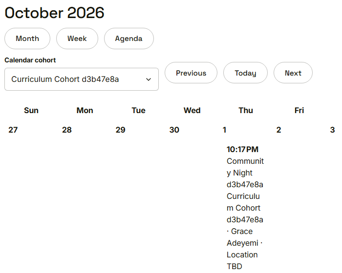
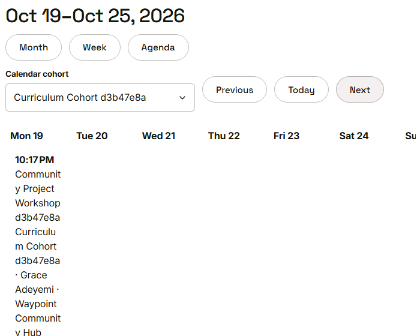
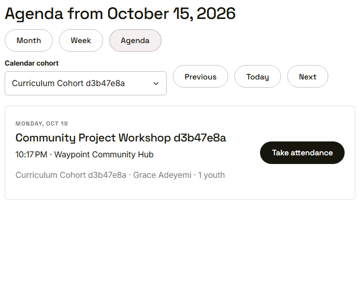
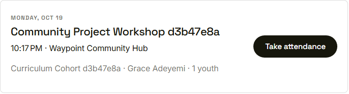

Waypoint · Video 067
Browsing the program calendar
Month, week and agenda, one cohort at a time
Month shows the whole picture

Month view, filtered to one cohort
Week lays out seven days

Week view with previous, today and next
Each session is a card

Time, place, cohort, mentor and youth count
Straight to the attendance sheet

Take attendance opens that session's roster
Things to remember
- Three views: month, week and agenda
- A cohort filter narrows the calendar to one group
- Each session shows time, place, mentor and cohort
- Each session links to its attendance sheet